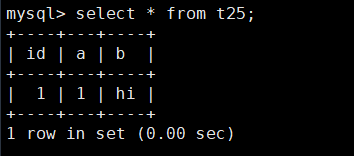
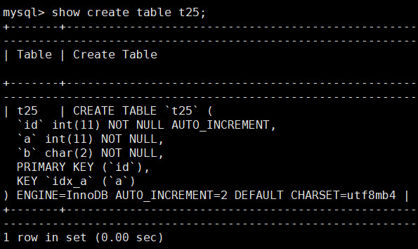
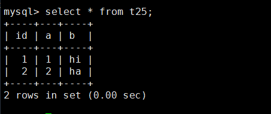
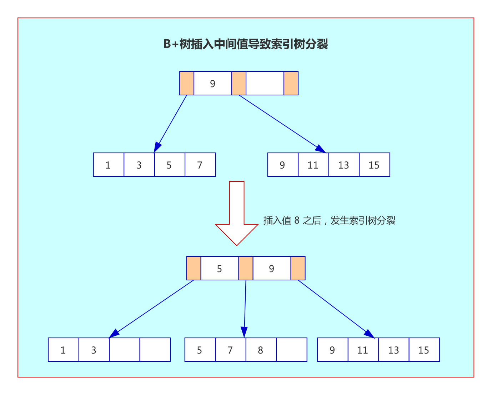

前言
mysql默认都带有一个id的自增主键，这么做的原因是神马，今天研究一下。
关于自增主键
当我们创建表时，可以定义主键为自增的，具体方法如下：
1 | CREATE TABLE `t25` ( |
空表情况下，我们不指定 id 字段写入数据时，id 字段会自动获取到值 1，如下：
首先写入一条数据，没指定 id 的值：
1 | insert into t25(a,b) values (1,'hi'); |
再进行查询时，发现 id 字段自动获取到值 1：
1 | select * from t25; |

这里我们查询一下表 t25 的表结构：
1 | show create table t25; |

发现表结构中包含 AUTO_INCREMENT=2，在下一次执行未指定 id 字段的 insert 语句时， 主键 id 会自动获取到这个值。
1 | insert into t25(a,b) values (2,'ha'); |
select * from t25;

发现新写入的数据 id 自动获取到 2 这个值。也就是，如果不指定，则会写入当前最大 ID 加 1 的值。
主键和聚集索引的关系
很多同学会把主键和聚集索引弄混，这里先简单聊聊它们的区别：
- 在 InnoDB 中，聚集索引不一定是主键，但是主键一定是聚集索引：原因是如果没有定义主键，聚集索引可能是第一个不允许为 null 的唯一索引，如果也没有这样的唯一索引，InnoDB 会选择内置 6 字节长的 ROWID 作为隐含的聚集索引。
- 我们知道 InnoDB 的数据是按照主键顺序存放的，而聚集索引就是按照每张表的主键构造一颗 B+ 树，它的叶子节点存放的是整行数据。
- 每张 InnoDB 表都有一个聚集索引，但是不一定有主键。
主键是否需要设置为自增
现在来讨论本节的重点：主键是否需要设置为自增？
通过上面的学习，我们知道了聚集索引是按照每张表的主键构造一颗 B+ 树的，而 B+ 树中，所有记录节点都是按键值的大小顺序存放在同一层叶子节点上。
如果每次插入的数据都是在聚集索引树的后面，聚集索引不需要分裂就可以存入数据。
但是如果插入的数据值在聚集索引树的中间部分，由于要保证插入后叶子节点中的记录依然排序，就可能需要聚集索引树分裂来保证键值的有序性。如下（这里省略了叶子节点之间的指针）：

如上图，Leaf Page（叶子节点数据页)已经满的情况下，如果写入的值是聚集索引树的中间部分，则会进行一次页分裂，以保证叶子节点上的记录有序和 B+ 树的平衡。并且分裂后，有些数据页没被用满，导致页空间浪费。
因此如果业务输入的主键都是随机数字，那么写入数据时很可能会导致数据页频繁分裂，从而影响写入效率。
而如果设置主键是自增，那么每一次都是在聚集索引的最后增加，当一页写满，就会自动开辟一个新页，不会有聚集索引树分裂这一步，效率会比随机主键高很多。这也是很多建表规范要求主键自增的原因。
经验分享：
除了要求主键自增外，最好主键也要无业务意义，原因是防止主键更新而导致页分裂的情况。
当然也不是所有的情况主键都需要设置为自增，比如可以用程序写入增长的主键值，保证了新写入数据的主键值比之前大，也可以避免聚集索引树频繁分裂。
总结
本节讨论了自增主键的使用方式，并讲解了主键与聚集索引的关系。
通过本节学习，如果主键是随机的，那么写入数据时很可能会导致数据页频繁分裂，从而导致写入效率低和页空间浪费。
而如果设置主键是自增，那么每一次都是在聚集索引的最后增加，当一页写满，就会自动开辟一个新页，不会有聚集索引树分裂这一步，效率会比随机主键高很多。
当然也不是所有的表都需要设置为自增，如果通过业务逻辑给到表主键的值是增长的（不一定连续），保证了新写入数据的主键值比之前大，也可以避免聚集索引树频繁分裂。这种方式也是可以选择的。
参考资料
《MySQL 技术内幕：InnoDB 存储引擎》第 2 版 5.3.1 B+ 树的插入操作 和 5.4.3 B+ 树索引的分裂

...
...
This is copyright.